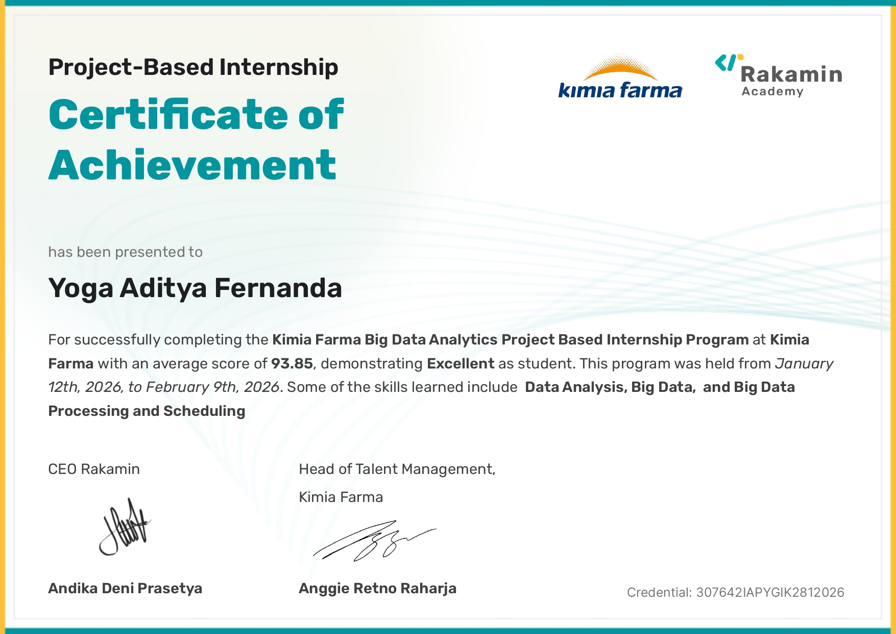
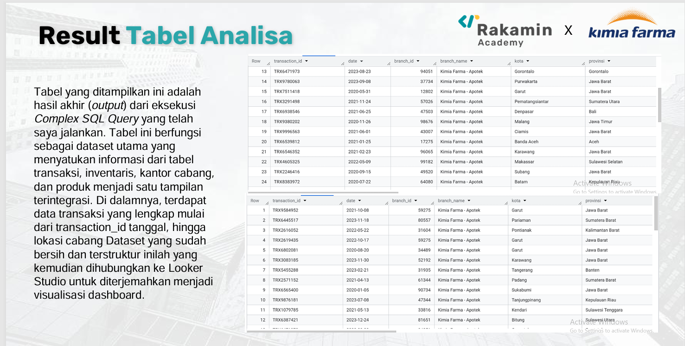
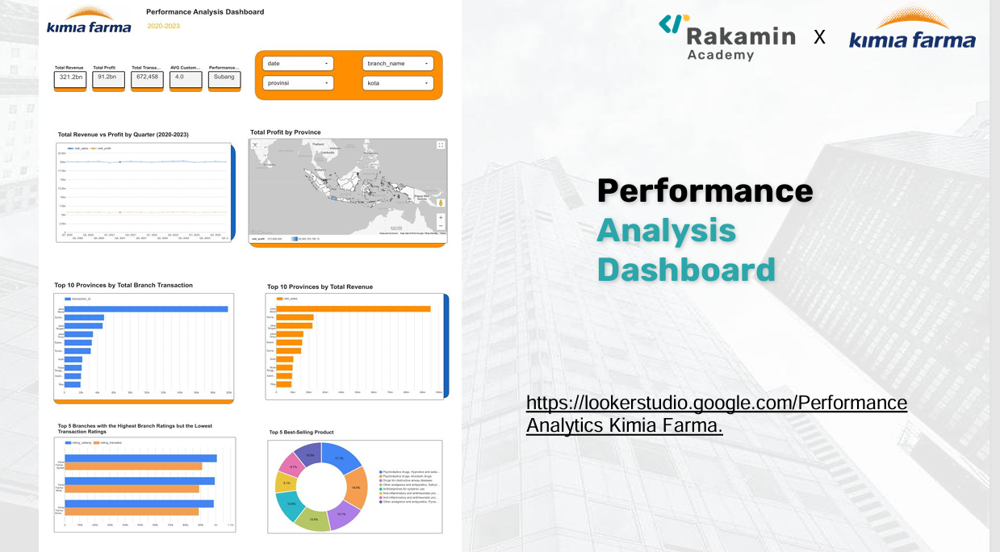

Project-Based Internship : Big Data Analytics Kimia Farma x Rakamin Academy



Sebagai analis data yang berpengalaman mengelola dan mengolah dataset skala besar, dengan rekam jejak menangani lebih dari 672.000 baris data transaksi. Memiliki keahlian teknis dalam ekosistem Google Cloud, saya terampil melakukan integrasi data melalui Google Cloud Storage dan BigQuery untuk kebutuhan analisis mendalam. Dengan penguasaan SQL kompleks, saya mampu merancang query untuk menggabungkan tabel relasional serta menghitung metrik bisnis krusial seperti Nett Profit dan Nett Sales. Selain aspek teknis, saya berfokus pada penyajian data yang intuitif melalui pengembangan Dashboard Performance Analytics interaktif menggunakan Looker Studio. Kemampuan saya dalam mengekstraksi business insight terbukti melalui identifikasi tren pasar nasional, seperti dominasi wilayah Jawa Barat, yang memberikan landasan kuat bagi pengambilan keputusan strategi distribusi yang lebih efisien dan tepat sasaran.
Berhasil mengelola dan melakukan migrasi 672.000+ baris data transaksi ke Google Cloud Storage dan BigQuery dengan tingkat akurasi data yang tinggi.
Mengoptimalkan analisis bisnis dengan merancang query SQL kompleks untuk penggabungan data relasional dan kalkulasi metrik finansial utama.
Meningkatkan efisiensi pemantauan performa dengan membangun dashboard interaktif di Looker Studio yang memetakan tren pendapatan dan performa cabang secara real-time.